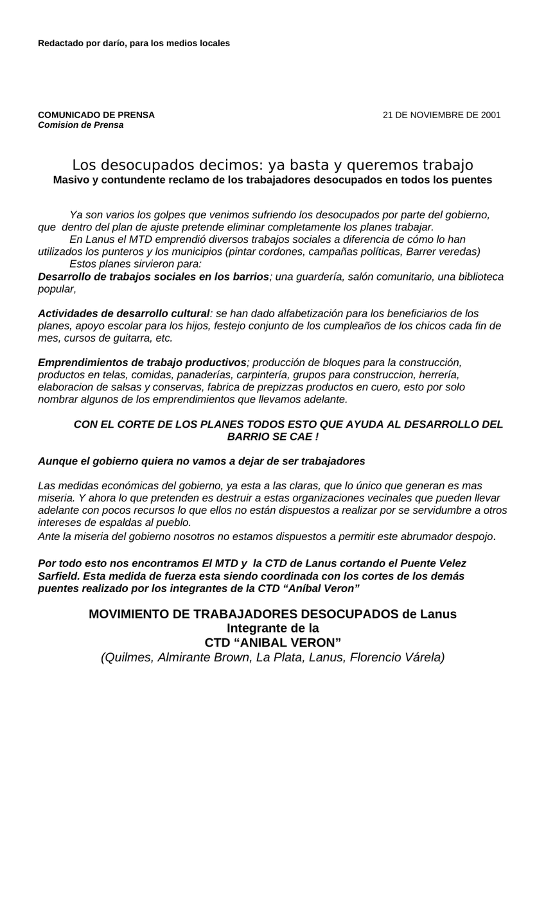

Primera hoja de corte de puentes noviembre 2001.doc. Clic en la imagen para abrir o descargar el archivo original.·22.0 KB·1 hoja

Redactado por darío, para los medios locales
Comision de Prensa
Los desocupados decimos: ya basta y queremos trabajo
Masivo y contundente reclamo de los trabajadores desocupados en todos los puentes
Ya son varios los golpes que venimos sufriendo los desocupados por parte del gobierno, que dentro del plan de ajuste pretende eliminar completamente los planes trabajar.
En Lanus el MTD emprendió diversos trabajos sociales a diferencia de cómo lo han utilizados los punteros y los municipios (pintar cordones, campañas políticas, Barrer veredas)
Estos planes sirvieron para:
Desarrollo de trabajos sociales en los barrios; una guardería, salón comunitario, una biblioteca popular,
Actividades de desarrollo cultural: se han dado alfabetización para los beneficiarios de los planes, apoyo escolar para los hijos, festejo conjunto de los cumpleaños de los chicos cada fin de mes, cursos de guitarra, etc.
Emprendimientos de trabajo productivos; producción de bloques para la construcción, productos en telas, comidas, panaderías, carpintería, grupos para construccion, herrería, elaboracion de salsas y conservas, fabrica de prepizzas productos en cuero, esto por solo nombrar algunos de los emprendimientos que llevamos adelante.
Aunque el gobierno quiera no vamos a dejar de ser trabajadores
Las medidas económicas del gobierno, ya esta a las claras, que lo único que generan es mas miseria. Y ahora lo que pretenden es destruir a estas organizaciones vecinales que pueden llevar adelante con pocos recursos lo que ellos no están dispuestos a realizar por se servidumbre a otros intereses de espaldas al pueblo.
Ante la miseria del gobierno nosotros no estamos dispuestos a permitir este abrumador despojo.
Por todo esto nos encontramos El MTD y la CTD de Lanus cortando el Puente Velez Sarfield. Esta medida de fuerza esta siendo coordinada con los cortes de los demás puentes realizado por los integrantes de la CTD “Aníbal Veron”
MOVIMIENTO DE TRABAJADORES DESOCUPADOS de Lanus
Integrante de la
(Quilmes, Almirante Brown, La Plata, Lanus, Florencio Várela)
Transcripción del documento original corte de puentes noviembre 2001.doc. Se conserva la ortografía del original.